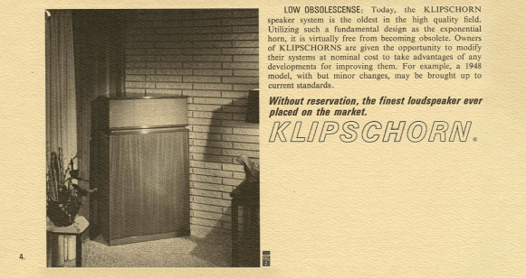
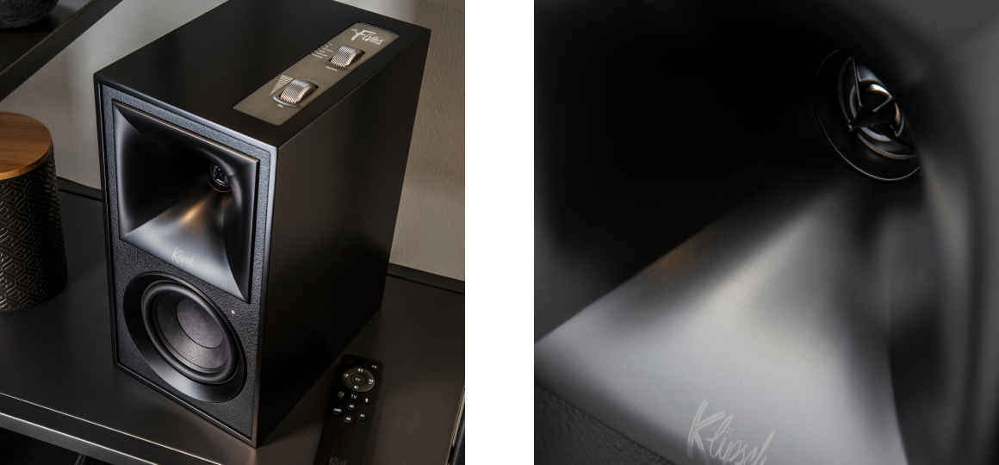
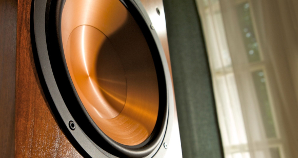
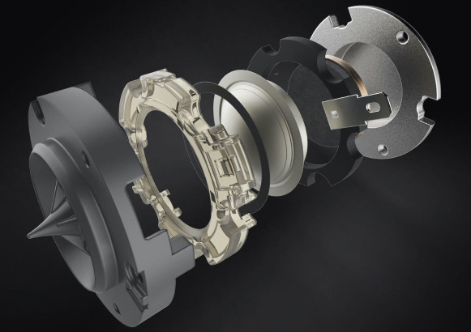
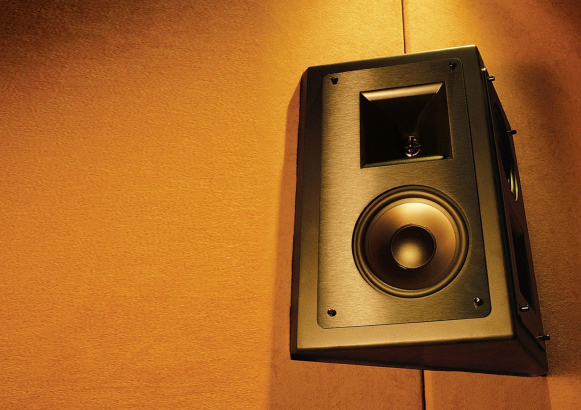

Движимый идеей превосходства рупорных систем перед традиционной акустикой, первое время он собирал колонки вручную, а изготовление корпусов поручил рояльной фабрике. После того, как компания начала приносить хорошую выручку, Пол Клипш принял решение нанять первого сотрудника, а уже в начале 50-х годов, значительно расширив бизнес, Klipsch приобретает собственную небольшую фабрику. Знаменитой «визитной карточкой» бренда стала первая серийная модель, рупорная акустика Klipschorn: живая легенда в мире аудио, которая производится по сей день.
Klipsch — это техника высочайшего класса, которая позволяет ощутить всю мощь и детализацию звучания: классические стереосистемы и кинотеатральные колонки с поддержкой иммерсивных форматов, стильные саундбары, портативные беспроводные системы и наушники, созданные для неизменно ярких впечатлений от прослушивания. Движущая сила развития Klipsch — стремление к технологическому превосходству и инновационные идеи, которые меняют жизнь к лучшему.
Klipsch: начало
Пол Уилбер Клипш основал компанию «Klipsch & Associates» в 1946 году: будучи дипломированным специалистом по электронной технике и изобретателем с весьма оригинальным мышлением, он открыл собственную мастерскую, которая расположилась в здании бывшей телефонной станции — в небольшом городке Хоуп, штат Арканзас.
Технологии Klipsch
Klipsch очень гордится собственными разработками, которые формируют прочную основу лидерства компании. Главные ингредиенты успеха акустических систем Klipsch — высокая чувствительность и низкий уровень собственных искажений, максимальный динамический диапазон, ровная АЧХ и широкая диаграмма направленности. Всё это становится реальностью благодаря проприетарным технологиям, каждая из которых достойна отдельного упоминания.
klipschorn
Ввиду того, что низкочастотный рупор представлялся не самым лучшим решением для домашней акустики в силу его внушительных размеров, Пол Клипш предложил интересную идею: он применил рупор, свёрнутый в корпусе колонки, а в качестве его естественного продолжения предложил использовать стены: именно поэтому Klipschorn устанавливаются в углах комнаты.

Таким образом, домашние акустические системы достигли феноменально высокой чувствительности и превосходной дисперсии во всём диапазоне частот. Конструкция этих легендарных колонок неоднократно совершенствовалась, однако главные принципы, заложенные более 70 лет назад, остаются неизменными.
Tractrix
Технология Tractrix представляет собой рупор с точно рассчитанной геометрией, что позволяет заметно улучшить характеристики звуковых драйверов.

Рупоры Tractrix снижают акустические резонансы излучателей и перепады импеданса, улучшают сочетаемость колонок с усилителями, детальность звучания и дисперсию звуковых волн, позволяя достичь высокого качества звука вне зависимости от местоположения слушателя. Klipsch также применяет технологию Tractrix для улучшения характеристик портов фазоинвертора и уверенного воспроизведения низких частот.
Cerametallic
Технология Cerametallic позволяет создавать очень лёгкие и одновременно жесткие диффузоры, что благоприятно сказывается на чувствительности акустических систем и заметно улучшает воспроизведение низких частот:

звучание будет ещё более детальным и динамичным, с глубокими и насыщенными басами. Вдобавок, фирменные драйверы медного цвета смотрятся просто роскошно: это одна из главных особенностей дизайна колонок Klipsch.
Linear Travel Suspension
Главная цель Klipsch при разработке технологии Linear Travel Suspension (LTS) — полное соответствие высоким требованиям к излучателям в рупорном оформлении: минимальные искажения, высокая детализация и естественность звучания.

В твитерах Klipsch с технологией LTS применяются алюминиевые куполы и подвесы из каптона — полимерного материала, который хорошо зарекомендовал себя в аэрокосмической отрасли: он стабилен в диапазоне температур от −273 до +400 °C, к тому же, это прекрасный диэлектрик, который практически не подвержен воздействию внешних факторов. Твитеры LTS показывают превосходные характеристики с минимальным разбросом параметров, что особенно важно для точного воспроизведения высоких частот.
Wide Dispersion Surround Technology
Источником вдохновения при создании акустики по запатентованной технологии Wide Dispersion Surround Technology (WDST) послужили профессиональные кинотеатральные системы: эти дипольные колонки, оснащенные разнонаправленными динамиками, разработаны инженерами Klipsch для достижения наиболее однородного звучания.

Технология Wide Dispersion Surround Technology — настоящая находка для систем домашнего кинотеатра: по сравнению с традиционными колонками, звучание акустических систем WDST меньше зависит от особенностей помещения, позволяя варьировать место их установки.
История Klipsch в датах
1946
Пол Уилбер Клипш основал «Klipsch & Associates»: акустические системы Klipschorn поступили в продажу.
1951
«Klipsch & Associates» покупает небольшую фабрику с целью расширения собственного производства.
1957
Представлена модель Heresy: её можно считать первой в мире серийной акустикой центрального канала. Спустя время, она была модернизирована, став стереоколонками.
1977
Разработаны мощные концертные/кинотеатральные колонки MCM. Пол Клипш удостоен золотой медали сообщества аудиоинженеров AES, за важный вклад в проектирование акустических систем и методы измерения искажений.
1989
Разработан рупор Tractrix, призванный улучшить характеристики звуковых излучателей. Владельцем компании становится Фред Клипш, троюродный брат Пола. Его стратегия развития впоследствии помогла Klipsch стать ещё более успешной компанией.
1999
Klipsch представляет первые в мире компьютерные колонки, сертифицированные THX®: модель ProMedia V.2-400 навсегда изменила представление о настольных мультимедийных акустических системах.
2005
Klipsch приобретает датскую компанию Jamo.
2009
Старт продаж наушников Image S4. Дебют этой модели оказался одним из самых успешных в истории техники Klipsch.
2011
Klipsch присоединяется к корпорации Voxx International и продолжает расширять ассортимент.
2016
Компания отметила 70-летний юбилей, представив специальные версии классических колонок серии Heritage.
2018
Klipsch выпускает высококачественные беспроводные акустические системы и колонки с голосовым управлением.
2020
Представлены обновлённые версии колонок: Heresy IV с низкочастотным оформлением Tractrix, Cornwall IV со среднечастотным драйвером из полиамида в рупорном оформлении Mumps, активные полочные колонки с беспроводным модулем The Fives и акустика для домашнего кинотеатра Reference Wireless.
Klipsch сегодня
Многолетняя история бренда, внушительный багаж разработок и патентов — основополагающие преимущества компании, однако Klipsch не останавливается на достигнутом и активно расширяет ассортимент, предлагая большой выбор акустических систем для домашнего кинотеатра, сабвуферов и саундбаров, стильных беспроводных и настольных колонок, всепогодной акустики для открытых пространств, а также встраиваемых решений для установки в стены или в потолок.
Klipsch успешно развивает столь актуальные направления как беспроводные наушники и аудиотехника в формате «Home Office», ведь всё больше людей ценят мобильность и переходят на удалённый формат работы. Среди приоритетов Klipsch — максимальное удобство и комфорт для пользователей, развитие новых беспроводных технологий и голосового управления, стильный дизайн и неизменно высокое качество звука.